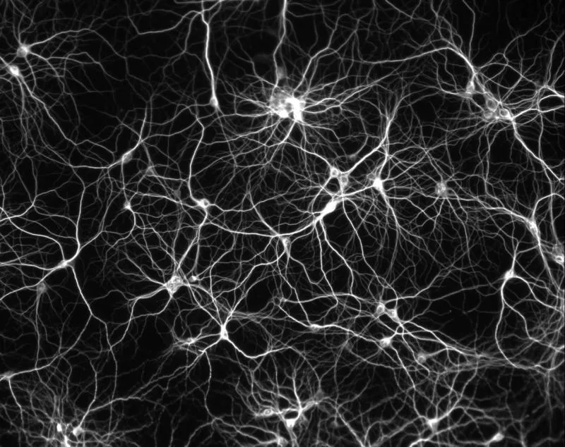

Blog · March 23, 2010
Language Implications


Data quantifies qualities along variable attributes correlating to an “event” or representing a set of “events”.
“Information is data that has been processed in such as way as to be meaningful,” [1,2] Also, “A collection of facts from which conclusions may be drawn” (‘statistical data’) [3]
Meaning signifies implication. “Implication is deductive inferred logical relation. ‘ if p then q: if p is true then q cannot be false'” [4] From quality information we can differentiate complex systems and model them with equations.
Data is fed into our neural system from our senses over time with systemic repetition and correlated via lingual adaptation into information. Information is then relayed off itself, forming concepts (information systems). Concepts are comprised of variable lingual attributes and exhibit meaningful complexity, described by the lingual structure from which they are formed.
Cognition is functionally different across various lingual data systems (concepts), which are then organized within a grammatical framework relative to other concepts. This is self-organization. Might a cohesive pattern emerge in neural functionality if we could see specific neuron systems forming new “concepts” via grammatic relations in order to more efficiently process increasingly complex ideas? Could “more meaningful information” imply a denser Set of data (information) to which the concept could potentially be applied? Our minds create a conscious whole greater than the sum of its parts by processing words into concepts and integrating different concepts to create experientially new thoughts, which are in turn described by new lingual formations and even entirely new words and ideas. This process simplifies the energetic input required to think a difficult thought by utilizing information, rather than data, and compounding meaningful representations of it across multiple meaningful systems. Aristotle’s Holism and Occam’s Razor together make a concept that I refer to as “complex energy density”.
Thoughts from the forefront of theoretical science,
Amy
First published on my old blog, amyrobinson.wordpress.com, March 23, 2010.